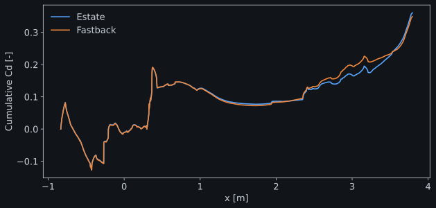
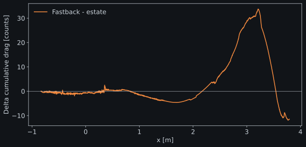

The problem
Integrating a fuel-cell system into a commercial vehicle required understanding radiator airflow across vehicle speeds, fan states and changes to the cooling arrangement.
VEHICLE CFD / EXTERNAL AERODYNAMICS
Same SUV, two rear ends. Which one produces less drag, and where along the body is the difference made? A full-scale AeroSUV study run at the Reynolds number of the published 1:4 wind-tunnel test, then traced from the integrated coefficient back to surface pressure and wake structure.
Independent study · Preliminary results
Estate and fastback converged; the notchback case is pending. Results are compared with experiment and published CFD, not validated against them.
Alberto Brambila, PhDGeometry scaling, scripted PyFluent setup, force decomposition, custom post-processing and interpretation.
01 / THE RESULT
Experiment, published CFD and this study all rank the fastback below the estate. The difference here is smaller (−10 counts against −28 measured, −25 in the published CFD) and the absolute drag coefficient is 15–22 % above the wind-tunnel value. The model set-up differs from the reference test in ways that raise drag; those differences are listed in section 06.
| Coefficient | Rear end | This study | Experiment | Published CFD |
|---|---|---|---|---|
| Cd | Estate | 0.361 | 0.314 | 0.328 |
| Cd | Fastback | 0.350 | 0.286 | 0.303 |
| CLf | Estate | −0.083 | 0.024 | −0.009 |
| CLf | Fastback | −0.042 | 0.053 | 0.019 |
| CLr | Estate | 0.111 | −0.016 | −0.014 |
| CLr | Fastback | 0.155 | 0.080 | 0.089 |
Axle lift. The fastback raises both front and rear lift, as in the experiment (+0.04 each here; +0.03 and +0.10 measured). Absolute values do not match: front lift is negative here but positive in the test, and the estate’s rear lift changes sign. These are reported, not interpreted further, given the set-up differences in section 06.
02 / WHERE THE DIFFERENCE IS MADE
A single coefficient hides where drag is produced. Summing the streamwise pressure and shear force of every wall face from nose to tail turns Cd into a curve along the vehicle. Both rear ends share the front, so their curves must coincide there; they do, within ±1 count up to x ≈ 1 m.


Surface pressure coefficient, rear three-quarter view, linear scale from −0.8 to 0.4. The white midpoint is Cp = −0.2, not zero; blue is suction. On the fastback, suction acts on a rearward-facing slope and pulls the body backwards: that is the +33-count penalty in the curve above.
03 / THE WAKE
Base drag follows the size of the separated region behind the vehicle. The estate's vertical tailgate releases a tall recirculation bubble; the fastback's sloped window keeps the flow attached further and leaves a smaller, lower one. Higher base pressure is what recovers the 44 counts.
Total-pressure coefficient Cpt on a cross-plane 100 mm behind the vehicle (25 mm at 1:4, the plane used in Zhang et al., Fig. 21; comparison is qualitative). Dark regions have lost their free-stream energy. The fastback wake core ends about 0.3 m lower.
04 / DRAG BUDGET
Grouping wall zones gives a component budget. The closed engine bay is the largest contributor, 35 % of the total, because this configuration has no cooling-air exit: the grille and the outlet closure act as a solid front face. The closure panel alone adds Cd = 0.045. The rear-end differences are spread across body, rear end and wheels, which is why the cumulative curve is needed to explain them.
| Component | Estate | Fastback | Difference (counts) |
|---|---|---|---|
| Body | 0.027 | 0.010 | −16 |
| Rear end | 0.092 | 0.095 | +3 |
| Mirrors | 0.011 | 0.011 | 0 |
| Front wheels | 0.039 | 0.043 | +4 |
| Rear wheels | 0.027 | 0.023 | −4 |
| Underbody | 0.035 | 0.039 | +4 |
| Engine bay | 0.128 | 0.128 | 0 |
| Total | 0.3605 | 0.3503 | −10 |
Differences use unrounded values. Groups sum to 0.359 and 0.349; the remainder is the radiator housing and measurement bodies.
05 / METHOD
The geometry was scaled ×4 to full size and the speed reduced from 50 to 12.5 m/s so the Reynolds number matches the 1:4 test. Every quantity that scales with geometry followed the same rule, so coefficients stay comparable with the published data.
Re = UL/ν ≈ 2.3 × 106 on the 2.786 m wheelbase. Wheel speed ω = U/R = 33.6 rad/s; reference area × 16; radiator thickness × 4.
Fluent Meshing fault-tolerant workflow, ≈ 10.7 M mostly polyhedral cells, one mesh per rear end with identical size controls. Mean wall y+ ≈ 35.
Incompressible air, k-ω SST, coupled pseudo-transient solver, second order. Moving ground at 12.5 m/s, rotating-wall wheels, Darcy–Forchheimer porous radiator.
One PyFluent script applies physics, boundaries and monitors from a YAML file, runs 2–3 test iterations, then writes the case for the full run of 3000 iterations.
Surfaces are extracted once per case with PyFluent and redrawn with matplotlib and VTK. Common colour scales for both rear ends; no interpolation between cells.
Coefficients are means of the last 1000 iterations; uncertainty uses ten block means.
| Rear end | Mean Cd | Std. dev. | Block error | Drift |
|---|---|---|---|---|
| Estate | 0.3605 | 0.0005 | 0.0001 | −0.0002 |
| Fastback | 0.3503 | 0.0019 | 0.0005 | −0.0026 |
The estate is steady. The fastback still oscillates and drifts slightly downwards, so its Cd carries about ±3 counts. Drift is the second-half mean minus the first-half mean of the averaging window.
Air at 20 °C: ρ = 1.204 kg/m³, μ = 1.825 × 10−5 Pa·s. U1:1 = U1:4 · L1:4/L1:1 = 50/4 = 12.5 m/s, giving Re = 12.5 × 2.786 / 1.516 × 10−5 ≈ 2.3 × 106. Mach drops from 0.15 to 0.04; both are incompressible.
The published radiator curve at 1:4 is Δp = 5.07 v² + 20.72 v (Pa, v in m/s). Scaling the geometry ×4 while keeping the loss coefficient K(Relocal) keeps the quadratic term and divides the linear term by 4: Δp1:1 = 5.07 v² + 5.18 v. In Darcy–Forchheimer form over the 8 mm thickness, 1/α = 5.18/(μL) = 3.55 × 107 m−2 and C2 = 2 × 5.07/(ρL) = 1053 m−1, with resistance × 1000 in the transverse directions.
Coefficients use q∞ = 94.06 Pa and A = 2.47 m². Pitching moment is taken about the wheelbase midpoint on the ground; CLf = CL/2 + CM and CLr = CL/2 − CM. The paper does not state its reference area; a different choice would scale every coefficient proportionally.

06 / DIFFERENCES & LIMITS
The study reproduces the reference Reynolds number but not its wind-tunnel environment or cooling configuration. Each difference below has an expected effect; separating them requires the additional runs listed at the end.
| Aspect | Zhang et al. (2019) | This study | Expected effect |
|---|---|---|---|
| Scale and speed | 1:4, 50 m/s | 1:1, 12.5 m/s, same Re | None on coefficients, by design |
| Domain | 0.1 % blockage; 9 L upstream, 13 L downstream | ≈ 11 % blockage; ≈ 1 L upstream, ≈ 2 L downstream | Artificial acceleration around the vehicle: higher drag, altered lift. Most likely cause of the high Cd |
| Wheels | Tyres as moving walls; rims on a sliding mesh | Whole wheel as a rotating wall (ω = U/R); no MRF or sliding mesh | Spokes stay fixed, so rim pumping and wheelhouse ventilation are not resolved. Effect is local to wheels and wheelhouses |
| Cooling air | Open: radiator shroud; ≈ 30 % leaves through each front wheelhouse, the rest through the underbody | Closed: outlet panel fitted, wheelhouses sealed, no shroud | Engine bay acts as a closed cavity. In the paper, closing the cooling flow lowers Cd by ≈ 9 counts on the estate, so it does not explain the excess |
| Ground | Five moving belts, the rest frictionless | Whole floor moving at U∞ | Small |
| Mesh | Not compared | ≈ 10.7 M cells, coarse surface, mean y+ ≈ 35, no mesh-sensitivity study | Rear separation less precise; numerical uncertainty not yet quantified |
| Turbulence | Published CFD set-up | Steady RANS, k-ω SST, averaged over 1000 iterations | A mean state, not a time average of the unsteady wake |
The study was scoped as a comparison between rear ends within a limited computational budget, not as a replication of the reference test. Rotating walls impose the correct surface speed on tyre and rim at no extra cost; MRF or sliding-mesh rims add a rotating fluid region around every wheel, more cells and, for a sliding mesh, a transient run. Because both rear ends share the same wheels and the same simplification, the comparison between them remains consistent. The cost is that the spokes do not move relative to the air, so wheel pumping is missing; the paper resolved the rims with a sliding mesh, and absolute wheel and wheelhouse drag should be read with that in mind.
PROFESSIONAL PROJECT / VEHICLE THERMAL INTEGRATION
Integrating a fuel-cell system into a commercial vehicle required understanding radiator airflow across vehicle speeds, fan states and changes to the cooling arrangement.
I developed and executed the full-vehicle CFD workflow, from detailed geometry preparation to post-processing. Porous radiators and performance-based fan models connected external flow with underhood resistance.
I delivered radiator mass-flow data to the system-level thermal team, examined a blocked-radiator scenario and compared front-end pressures with Pitot measurements. Vehicle drag was also calculated.
This experience belongs to the professional project. AeroSUV is a separate research geometry: this independent study does not reproduce that vehicle, its numerical results or its experimental comparisons.
07 / SOURCE & ATTRIBUTION
AeroSUV was developed by FKFS and Röchling Automotive and distributed through ECARA. Experimental and published CFD values shown for comparison come from the paper below. Geometry scaling, simulation set-up, post-processing and interpretation on this page are independent work.
Zhang, C., Tanneberger, M., Kuthada, T., Wittmeier, F., Wiedemann, J., and Nies, J. (2019). Introduction of the AeroSUV—A New Generic SUV Model for Aerodynamic Research. SAE Technical Paper 2019-01-0646.
Official paper record ↗ · ECARA geometry and reference data ↗
Original geometry is obtained from the provider and is not redistributed here.
Set-up scripts, solver logs and extracted field data are maintained privately; selected figures and findings are published here.
© 2026 Alberto Brambila Solórzano. All rights reserved.